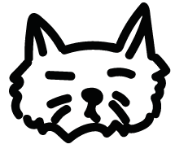

萌萌大眼賓士貓
(186)
(347)


開放領養中
2023-06-14
送養人 :  CLARE
CLARE
CLARE
這是一隻名叫布魯的貓，曾經遭遇過被棄養的經歷。當時，他還是一隻小貓，被放在一個陌生的地方，沒有人願意收留他。他流浪了很長時間，靠著自己的勇氣和毅力生存下來。
布魯最終被一個好心人救起，進入了寵物收容所。在那裡，他得到了基本的醫療和照顧，逐漸恢復了健康。但是，布魯仍然十分害怕人類，時常躲在角落裡，不敢接近人。他的遭遇讓人們深感心痛。
現在，布魯已經成為了一隻活潑、健康的貓，但他仍然需要一個溫暖的家。如果你想收養他，請給他足夠的時間和空間，讓他慢慢適應新的環境和主人。同時，也希望你能夠給予他充足的關愛和照顧，讓他再次感受到人類的溫暖和愛。
它們也正在等家...
